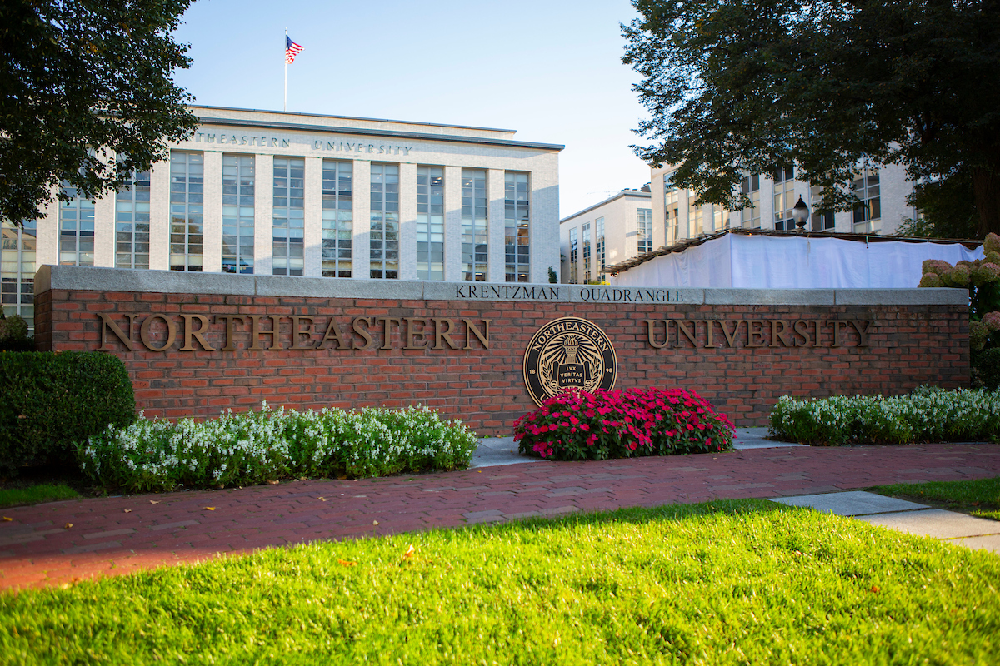

At Northeastern, I've grown in ways I couldn't have imagined. Living independently in Boston for the first time, navigating a rigorous academic schedule, building friendships, and stepping into professional environments through co-op; each of these experiences compounded into something greater than the sum of its parts.
Academically, I've flourished, but not before exploring my options. I entered as a Business Administration major and cycled through several concentrations as I tried to figure out where I'd get the most value. I explored finance deeply, completing courses in financial modeling and real estate finance, before ultimately landing on an Accounting & Advisory Services concentration. I've come to appreciate this concentration for its blend of technical rigor, data literacy, and interpersonal skill-building. Alongside that, I'll be graduating with a minor in Law and Public Policy. Some of my most stimulating classes have come from outside my primary discipline. Philosophy and ethics courses, in particular, reshaped how I think, not just what I think about. There's immense value in borrowing problem-solving frameworks from fields entirely unlike your own.
The friendships I've built here have been equally formative. From the tight-knit group I studied abroad with in Bilbao, to teammates on the intramural fields at Carter Field, to classmates I bonded with over late-night study sessions. These connections have genuinely enriched my time here. Some of my closest friends today are people I met by chance: neighbors in my apartment on Massachusetts Ave, a couple in their mid-seventies who have lived in Boston for decades. Learning the city through their eyes, and having the kinds of unhurried, thoughtful conversations that inform my perspective, has been one of the quiet gifts of my time here.
As I prepare to step into the real world, three lessons stand out above the rest: